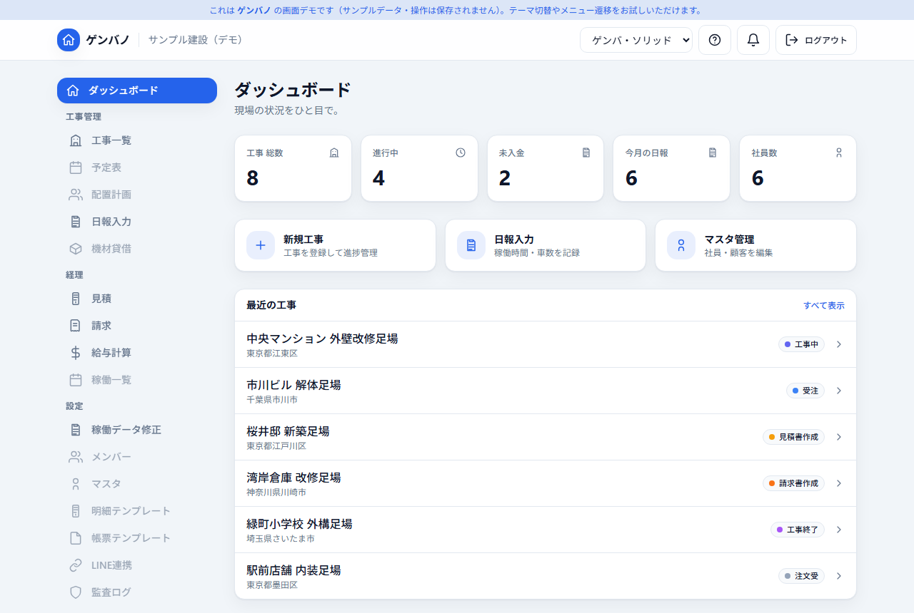
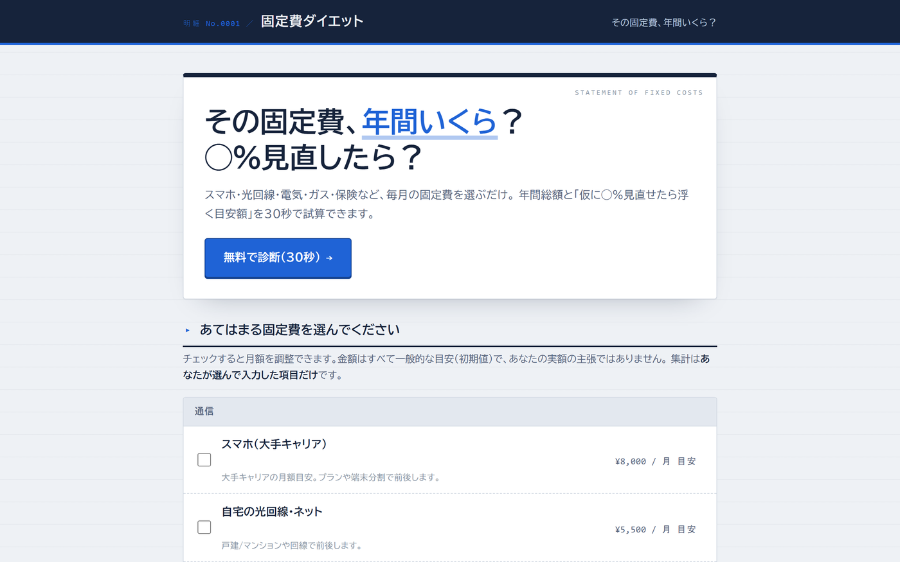

01業務システム · 受託
ゲンバノGenbano
地方の建設会社の事務を、日報から原価・請求・給与まで一本にまとめた業務システム。
紙と Excel と Access に分かれていたものを置き換えました。2026年8月から実際の業務に入っていて、
職人はスマホ、事務所は PC で同じデータを見ています。作って納めて終わりではなく、
いまも直しながら運用しています。
- Next.js 15
- React 19
- Cloudflare D1 / R2
- LINE LIFF
デモはログイン画面のデモアカウントを押すだけで入れます。データは架空のもので、毎日リセットされます。
稼働中
- 実務での稼働開始
- 2026-08-01
- 導入
- 1 社 / 運用中
- 公開デモ
- 公開中
- 担当範囲
- 要件 → 運用

02検証・技術レポート · 受託
工事別原価台帳（OCR API 活用デモ）と検証レポートverification
OCR API「space ocr」の提供元から依頼を受け、請求書の読み取りを工事別の原価台帳に載せるところまでを作り、
あわせて精度を実測したレポートを納めた仕事です。読み取った値をそのまま保存するのではなく、
検算 → 原本との照合 → 確認 → 原価計上という現場の流れの入口に置いています。
架空の帳票で項目ごとの誤り率を出し、業務ルール側の検算でどこまで救えるかまで数字にしました。
読み取りが正しいという API の返答をそのまま信じない前提で、確認が要るものだけ人に回す設計です。
成果物とソースコードは依頼元が公開し、2026年8月24日のプレスリリースで、
外部開発者5名の実装のひとつとして実名で紹介いただきました。
プレスリリースとリポジトリは依頼元が公開しているものです。リポジトリにはデモ、検証レポート、測定に使った生データが入っています。公開レポートの数字はエンジン v81 時点のものなので、その後の仕様変更を受けて測り直した結果を追補にまとめています。
公開中
- 検証した帳票
- 20 枚 × 2経路
- 保存した API 応答
- 410 件
- 納品レポート
- 45 ページ
- 発注から納品
- 37 時間
- 公開
- プレスリリース
03Web アプリ · 個人開発
診断 Web アプリ 10本とハブshindan
家計や推し活をテーマにした診断アプリを10本作り、送客用のハブから束ねています。
企画、文章、デザイン、実装、ドメイン、計測まで一人。商材ごとに配色もレイアウトも別に作り、
使い回していません。全件が独自ドメインで本番稼働しています。
- Cloudflare Pages
- 静的サイト
- GA4 / Search Console
- 独自ドメイン
公開中
- 公開本数
- 10 本 + ハブ
- 稼働
- 全件 本番
- 計測
- GA4 / GSC
- 担当範囲
- 企画 → 運用

04デスクトップアプリ · 個人開発
CutLinevideo editor
タイムラインで切って並べる動画編集アプリ。トリム、結合、テロップ、トランジション、
キーフレームまで扱えます。書き出しと同じ処理でプレビューを作っているので、
見えている絵と出来上がりがずれません。MCP サーバーを同梱していて、
Claude Code から会話で編集を指示することもできます。
- Python
- pywebview
- ffmpeg
- MCP
- GPL-3.0
配布準備中
- 自動テスト
- 572 件
- ライセンス
- GPL-3.0
- 外部連携
- MCP 同梱
- 対応
- Windows
05WebRTC サービス · LP 制作
Mimamobaby monitor
使っていないスマホを、ブラウザだけで見守りカメラにする P2P サービス。
映像はサーバーを経由せず端末どうしで直接つなぎます。
製品本体とランディングページを一人で設計・実装しました。
- WebRTC P2P
- AWS Lambda
- LP デザイン
制作物
- 通信
- P2P 直結
- 必要なもの
- ブラウザのみ
- 担当範囲
- 本体 + LP
06デスクトップアプリ · 個人開発
Realtime Translation字幕翻訳
PC のスピーカーに出ている音声をそのまま拾って文字起こしし、翻訳して画面に字幕で重ねます。
ゲームや動画を見ている最中でも、画面を切り替えずに読めます。
- Python
- WASAPI
- Whisper
- マルチ AI 連携
制作物
- 音声の取得
- WASAPI
- 文字起こし
- Whisper
- 表示
- 常時最前面
07自動化 · 運用中
YouTube 自動生成パイプラインpipeline
台本の生成から音声合成、口パク、字幕、サムネイル、投稿までを通しで自動化した動画パイプライン。
長尺とショートの2系統を、実際のチャンネル運用で回しています。
止まった箇所が分かるように、工程ごとに結果を残す作りにしています。
- Python
- VOICEVOX
- FFmpeg
- LLM 台本
運用中
- 系統
- 長尺 / ショート
- 音声
- VOICEVOX
- 投稿
- API 経由
08Web アプリ · 個人開発
宝島（3D 仮想レンタルビデオ店）takarajima
配信サービスを横断して、観られるものを棚に並べた 3D の店です。友達と同じ店内を歩いて物色し、
上映室に入れば同じものを同時に観られます。何を観るかを決めるまでの時間を、
一覧をスクロールする作業ではなく、店を歩く時間として作り直しました。
棚は実際のアカウントの視聴可能作品から組み、上映室のキューは全員で操作します。
相手が選んだものへは、こちらが押したときだけ合流します。勝手に画面を変えられない、
というのが同期の設計方針です。
- Three.js
- TypeScript
- Cloudflare Workers
- Durable Objects
- WebRTC
動画はサンプルデータで撮影したものです。棚に並んでいる作品名は架空で、
上映室で流しているのは自分のチャンネルの動画です。稼働中のため公開リンクは載せていません。
稼働中
- 描画
- Three.js WebGL
- 同時視聴
- 部屋 単位
- 通話
- 任意 必須ではない
- 配信元
- YouTube / Twitch / Kick
- 公開
- 限定